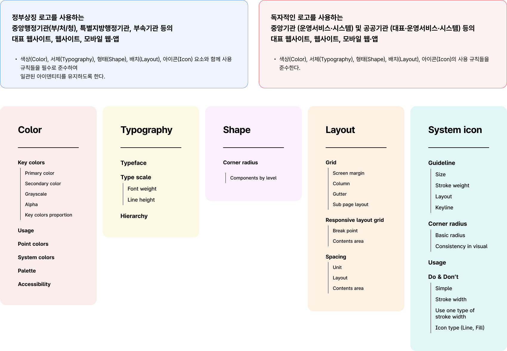
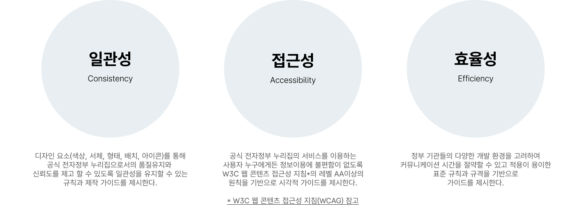

@@include("../inc/head.html", { "title": "적용 범위 및 구분 | 스타일 가이드 - KRDS", })
@@include("../inc/header-top.html")
@@include("../inc/guide_header.html")
@@include("../inc/guide_aside.html")
스타일 가이드
적용 범위 및 구분
기관 적용 범위 및 항목

스타일 가이드의 방향성

✅ 접근성 : W3C 웹 콘텐츠 접근성 지침(WCAG) 참고